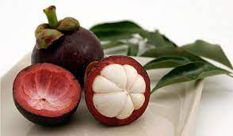

У світі дуже багато різних плодів. Багато з них ми бачимо у сучасних магазинах,але деякі з них залишаються для нас невідомими. Хіба не так? Давайте поговоримо про екзотичні і невідомі фрукти. Ми Вас познайомимо з Фруктом Богів, а саме з мангостіном.
Якщо вірити легенді, першим мангостін спробував Будда. Освіжаючий смак тропічного фрукта припав йому до душі, тому він подарував його людям. З цієї причини, а також через безліч корисних компонентів, його часом називають Фруктом Богів.Середня висота плодового дерева — близько 25 метрів.
Батьківщиною мангостіну (або, як його ще, називають мангостіна або мангостана) вважається південно-східна Азія, але сьогодні його культивують в країнах Центральної Америки і Африки. Також він виростає в Таїланді, Індії, на Шрі Ланці.
Цей на вигляд дивний, незрозумілий фрукт є джерелом важливих мікро і макроелементів, тому його широко використовують у фармакології.
До складу м'якоті входять:
вітаміни В, С, Е;
тіамін;
азот;
кальцій;
магній;
цинк;
фосфор;
натрій;
калій;
рибофлавін
Регулярне вживання мангостину сприяє на:
зміцненню імунної системи;
поліпшенню білкового обміну і складу крові;
регенерації печінки;
уповільненню старіння;
попередження розвитку ракових клітин;
кращому травленню, нормалізації обміну речовин;
поліпшенню розумової діяльності.
Ароматна, солодкувата м'якоть відрізняється приємною кислинкою, завдяки який мангустін відмінно тонізує і тамує спрагу. Його смак все описують по-різному. Кому-то він нагадує мікс винограду та полуниці, іншим - поєднання ананаса і персика та абрикоса.
За структурою білі часточки м'якоті соковиті, желеподібні. Вони буквально тануть у роті, залишаючи цитрусовий післясмак, і бажання тут же почистити ще один плід.

Вітаміни A, груп B і C. Кожен з елементів має свої функції, які в комплексі допомагають підтримувати здоров'я, гарне самопочуття - наприклад, вітамін A необхідний для зору і кісток, речовини групи B відповідають за нормальне функціонування мозку, C - важливі для зростання, відновлення клітин тканин.
Магній. Недолік цієї речовини стає однією з причин, внаслідок якої підвищується вміст цукру в крові. Крім того, дефіцит магнію може спровокувати депресію, хронічну стомлюваність. У поєднанні з кальцієм, ця речовина здатна підвищити міцність кісткової тканини.
Мідь. Є учасником процесів, пов'язаних з синтезом ферментів. Дефіцит міді негативно позначається на кровотворенні, метаболізмі, стані імунної, нервової системи.
Фосфор. Відповідає за стан кісткової тканини, зубів. Сприяє стимулюванню регенерації клітин, відновлення тканин, обмінних процесів.
Калій. Являє собою складову міжклітинних рідин. Ця речовина відповідає за нормальну роботу м'язової тканини, судин, залоз внутрішньої секреції. У поєднанні з натрієм сприяє підтримці водного балансу. Дефіцит калію проявляється у вигляді гіпертонії, набряків.
Натрій. Речовина, що відповідає за стан слизових, шкірних покривів, а також рівень артеріального тиску. У поєднанні з калієм натрій може регулювати роботу серця і судин, стан м'язової тканини.
Ксантони. Натуральні антиоксиданти, які зв'язують вільні радикали і виводять їх з тканин. Славляться своїми противірусними, антимікробними та тонізуючими властивостями.
Кальцій. Речовина, що є складовою зубів і кісток, регулятором серцевого ритму. Бере участь у виробленні гормонів. Крім того, кальцій зміцнює імунітет і підвищує проникність клітинних мембран.
Бажаєте придбати мангостін? Тоді переходьте на сайт за нашим посиланням.
Я надіюся ви дізналися щось нове та збагатили свої знання новими знаннями про новий тропічний фрукт.Дякуємо що подивилися до кінця, надіюся було цікаво та пізнавально! Дякуємо за увагу!